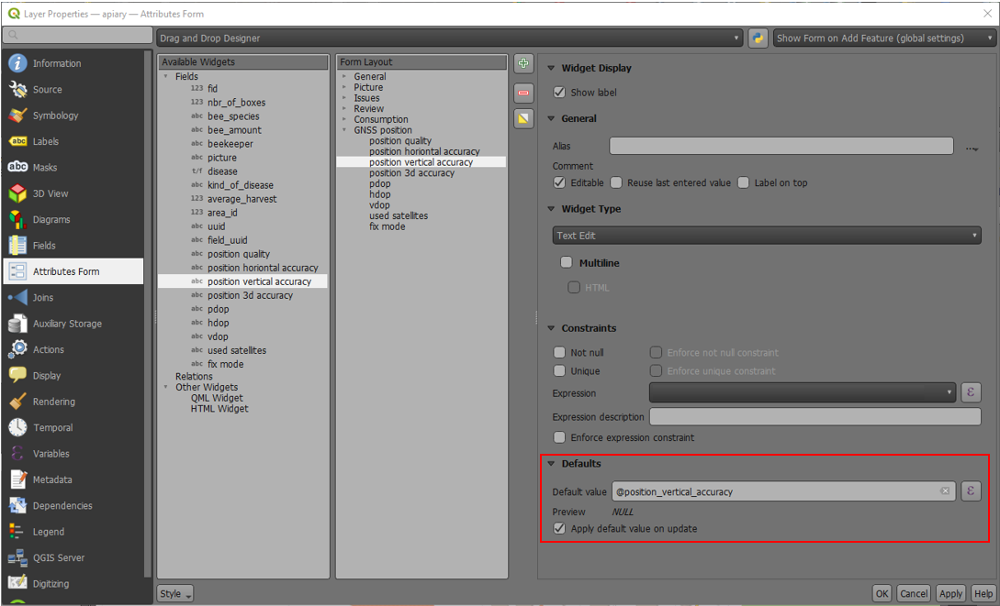

衛星測位 (GNSS)¶
QField は内蔵の GNSS（GPS、GLONASS、Galileo、Beidou などの全地球測位衛星システム）を利用することができます。また、QField は Bluetooth、TCPまたはUDP で外部アンテナに接続し、その NMEA ストリームを直接使用することもできます。
GPSデバイスは地表面の現在位置の2D座標と標高を計測できます。
可視化¶
測位が有効になると、あなたの位置が地図上に青く表示されます。 静止している場合は青い点で、移動している場合は移動方向を示す矢印で表示されます。
デバイスに磁気コンパスが内蔵されている場合は、青いビームがデバイスの現在の方位を示します。
現在位置を囲む円は、測位デバイスによって取得された精度を示します。
構成¶
QFieldの設定の測位タブでは以下の設定が可能です。
計測（M）値¶
M値を含むベクトルレイヤーでジオメトリをデジタイズする場合、座標カーソルが現在の位置にロックされるたびに、QFieldは個々の頂点に測位座標を追加します。
デフォルトでは、この値は測位座標のタイムスタンプ（エポックからのミリ秒）を表します。この値は、設定の測位タブにあるコンボボックスを使って変更することができます。
選択可能な値は、タイムスタンプ、対地速度、方位、水平精度、垂直精度、PDOP、HDOP、VDOPです。
高精度測位に必要なこと¶
測位に必要な最低限の精度を定義することができます。精度の質は、悪い（赤）、良い（黄）、とても良い（緑）の3つのクラスで報告されます。これらの色は、GNSSボタンの上にドットで表示されます。
しきい値は、設定の測位タブで定義できます。
高精度測位に必要な設定が有効になっていると、精度の値が悪い（赤）位置にカーソルがスナップされた状態では、新しい測位を行うことができません。
アンテナの高さ補正¶
使用するアンテナポールの高さは、設定で定義できます。測位された高度は、この値で補正されます
高度補正／垂直方向のグリッドシフト¶
高度の値は、垂直方向のグリッドシフトファイルで補正して、正距方位を算出することができます。
垂直方向のグリッドシフトファイルは、QField のアプリフォルダ<drive>:/Android/data/ch.opengis.qfield/files/QField/projに入れて、QField で利用できるようにする必要があります。
グリッドシフトファイルがそこに置かれると、QFieldの 使用中の垂直方向のグリッドシフトの下の測位設定で利用できるようになります。
高度補正を行う場合や、Bluetooth接続の外部アンテナを使用している場合は、デバイスからの正距方位の使用をオフにすることを検討してください。
現在サポートされているフォーマットは以下の通り：
- GeoTIFF (.tif, .tiff)
- NOAA Vertical Datum (.gtx)
- NTv2 Datum Grid Shift (.gsb)
- Natural Resources Canada's Geoid (.byn)
例えば ETRS89 (基準楕円体 GPS) から NAP (オランダ語) への変換のために、ユーザーは NSGI から nlgeo2018.gtx ファイルをダウンロードし、ディレクトリに置くことができます。
To obtain precise altitude data for Cadastral Surveying in Switzerland, users can access the file correction of the vertical grid shift through Geoid OGD from Swisstopo.
Following the download, users are advised to perform a conversion of the file labeled chgeo04_htrans_lv95.agr to chgeo04_htrans_lv95.gtx.
The QGIS processing algorithm gdal:translate (convert format) can be used for that.
使用方法¶
フィールドマーク
GNSSボタンを短くタップするとGNSS機能を有効にし、測位情報が利用可能になり次第、現在位置が中心に設定されます。
編集モードを有効にし対象のボタンをタップします。中心の十字はGNSS測位を使用していることを意味しています。
{kind=link}
GNSSボタンをロングタップすると測位メニューが表示されます
測位メニューの中で測位情報を表示をオンにし、プロジェクトの座標系に変換した現在地の座標情報の表示切替などの設定ができます。

備考
プロジェクトの座標系ではなくWGS84の経度/緯度が表示される場合は、まだGNSS信号を受信できていない可能性があります。
外付けのGNSS受信機を使用する¶
フィールドマーク
QFieldは、Bluetooth、TCP、またはUDP接続によるNMEAストリームを介して、外部のGNSS測位機器との接続をサポートしています。
設定 > 測位では、外部デバイスを追加、編集、削除するための一連のボタンと、内部GNSSデバイスと保存された外部GNSSデバイスを切り替えるためのドロップダウンリストを見つけることができます。
{kind=link}
プラットフォーム別の接続サポートの内訳は以下の通り：
| Android | iOS | Windows | Linux | MacOS | |
|---|---|---|---|---|---|
| Bluetooth | * | ||||
| TCP | |||||
| UDP | |||||
| シリアルポート |
(*) WindowsでのBluetoothサポートは、GNSSデバイスに接続する際にオペレーティングシステムが自動的に作成する仮想シリアルポートを介して行われます。
The NMEA sentences currently supported are GGA, RMC, GSA, GSV, GST, VTG, HDG and HDT.
備考
モック位置情報プロバイダーのような他のアプリが同じ接続を使用していないことを確認してください。
外部受信機ログ¶
測位デバイスとして外部受信機を選択した場合、設定 > 測位に、デバイスからファイルへのNMEAセンテンスのログというスイッチがあります。これを有効にすると、外部測位デバイスから送られてくるすべてのNMEAセンテンスがファイルに記録されます。
ログはAndroid/data/ch.opengis.qfield/files/QField/logsに置かれます。

備考
ログが常にオンになっていると、ストレージがいっぱいになってしまうので注意してください。
擬似ロケーション¶
フィールドマーク
QFieldに、別のアンドロイド・アプリを経由して、擬似ロケーションを提供することが可能です。これにはいくつかのオプションがあり、そのひとつがAndroid NTRIP Clientです。
これを行うには アンドロイド端末で疑似ロケーションを有効にする必要があります。
平均測位機能¶
フィールドマーク
備考
座標カーソルは位置を固定するボタンで現在位置にロックする必要があります。
平均化された座標を使ってデジタル化する機能があります。
頂点追加ボタンを押し続けると、座標の収集が開始されます。
収集中は、インジケータが座標カーソルの上に表示され、収集された位置の現在の数を反映するテキストを示しまず。平均座標の最小カウント要件がアクティブな場合は、その要件を満たすための進捗状況を示すプログレスバーも表示されます。

平均座標の最小カウントしきい値を有効にする設定は、QField 設定の測位パネルにあります。アクティブな場合、頂点追加ボタンを押したままにする必要はありません。ボタンを短くタップすると、座標の収集が始まり、最小カウントの要件が満たされると、平均化された座標が自動的に追加されます。

平均化された位置で @gnss_* または @position_ 変数 を使用する場合、変数は収集されたすべてのサンプルの平均も表します。
プロジェクトの設定¶
デスクトップの準備
測位に使用する変数¶
属性フォームで追加の式の変数を使用して、測位情報にアクセスすることができます。これらは、GNSS測位が有効になっている場合にのみ利用可能になります。
これらの変数は、個々の即位点の品質を追跡するためのフィールドのデフォルト値式の一部として一般的に使用されます。
すべての @position_*変数には対応する@gnss_*変数があります。gnss 変数は、十字線がスナップされていない場合でも、常に GNSSセンサーの値を取得します。
@position_source_name- センサーが報告した位置情報を与えたデバイスの名前。 内部センサーと外部センサーを区別する。 位置が手動で設定され、 位置がカーソルにスナップされていない場合、ソース名は "manual" となる。 カーソルがその位置にスナップされない場合、その他の変数はすべてnullになります。もしこの機能が必要な場合、 代わりにgnss_変数を使ってください。@position_quality_description- センサーから報告された品質を、人間が読みやすく翻訳した文字列。例："Fixed RTK"。これは 十字キーがセンサーにスナップしている時のみ利用可能。- IE@position_coordinate- WGS84の座標を持つ点。経度、緯度、高度で指定する。十字線がセンサーにスナップされたときのみ利用可能。-x(@position_coordinate)- IE@position_horizontal_accuracy- 座標の水平精度（メートル単位）。これは十字線がセンサーにスナップされた時のみ有効である。- IE@position_timestamp- センサーから取得された測位情報のUTCでのタイムスタンプ。これは十字線がセンサーにスナップされた時のみ有効である。- IE@position_direction- センサーから取得された度単位での真北からの移動方向 。これは十字線がセンサーにスナップされた時のみ有効である。- IE@position_ground_speed- センサーから取得された対地速度（m/s）。これは十字線がセンサーにスナップされた時のみ有効である。- IE@position_magnetic_variation-センサーから取得された 磁場の水平成分と真北の間の度単位の角度。 磁気偏角とも呼ばれます。 正の値は真北から時計回りの方向を示し、負の値は反時計回りの方向を示します。十字線がセンサーにスナップされる場合のみ利用できます。 - - IE@position_vertical_accuracy- センサーから取得された座標の垂直精度（メートル単位）。これは十字線がセンサーにスナップされた時のみ有効である。- IE@position_3d_accuracy- センサーから取得された座標の3次元精度（メートル単位）、3D-RMS。これは十字線がセンサーにスナップされた時のみ有効である。- IE@position_vertical_speed- 垂直速度 (メートル/秒) 。これは十字線がセンサーにスナップされた時のみ有効である。- IE@position_averaged_count- この変数には、このモードでデジタイズするときに平均位置を計算した収集位置の数が格納される。平均化されていない 非平均位置の場合、値は0（ゼロ）に設定される。- IE@position_pdop- センサーから取得された位置精度劣化度これは十字線がセンサーにスナップされた時のみ有効である。- E@position_hdop- センサーから取得された水平精度劣化度これは十字線がセンサーにスナップされた時のみ有効である。- E@position_vdop- センサーから取得された垂直精度劣化度これは十字線がセンサーにスナップされた時のみ有効である。- E@position_number_of_used_satellites- センサーから取得された衛星の数これは十字線がセンサーにスナップされた時のみ有効である。- IE@position_used_satellites- センサーから取得された使用中の衛星の一覧(pri)。 は、十字がセンサーにスナップしているときのみ有効です。 -array_to_string(array_foreach(@position_used_satellites, @element), ', ')- E@position_fix_status_description- センサーから取得されたGPS固定のステータス 「NoData」、「NoFix」、「Fix2D」もしくは「Fix3D」これは十字線がセンサーにスナップされた時のみ有効である。- E@position_fix_mode- 固定モード ('M' = 手動、2Dか3D、もしくはもしくは 'A' = 自動, 3D/2D) に操作で強制される。 これは十字線がセンサーにスナップされた時のみ有効である。- E
インフォメーション
- I：内臓測位デバイス E：外部（NMEA）測位デバイス。
satellitesを含む変数はiOSでは利用できません。
例：
十字線がセンサーにスナップされる場合 - @gnss_horizontal_accuracy --> センサーによって取得した座標の水平精度（メートル単位） - @position_horizontal_accuracy --> センサーによって取得した座標の水平精度（メートル単位） - @position_source_name --> センサー名
十字線が手動で移動された場合 - @gnss_horizontal_accuracy --> センサーによって取得した座標の水平精度（メートル単位）。 - @position_horizontal_accuracy --> 値はNULLになる。 - @position_source_name --> 値はmanualになる。
Information for GNSS Z value with Vertical grid shift in use: - Antenna height compensation=False
| Vertical Grid Shift in use | point Z Value z(geometry) | GNSS Device z(@position_coordinate) | QField Display | QField Label |
|---|---|---|---|---|
| None | Z ellipsoidal device value | Z ellipsoidal device value | Z ellipsoidal device value | Altitude: xxx.xxxx m |
| Orthometric from device | Z orthometric device value | Z orthometric device value | Z orthometric device value | Altitude: xxx.xxxx m (ortho.) |
| USER_Shift_Grid.GTX vertical grid shift |
Z shiftgrid value | Z ellipsoidal device value | Z shiftgrid value | Altitude: xxx.xxxx m (grid) |
頂点ロガー¶
収集した頂点のログのレイヤーを設定することが可能です。これにより、GNSSの品質の属性などの各頂点のメタデータを記録することができます。これを設定するには、プロジェクトにポイントレイヤーを追加し、この情報を保存するための属性を設定します。

そして、ポイントレイヤーへのデジタイジングロガーという役割を割り当てます。
QFieldSync --> プロジェクトプロパティへと進みます。

最も効果的にするために、レイヤー属性は、上で列挙した位置決め変数に依存するデフォルト値を持つべきです。